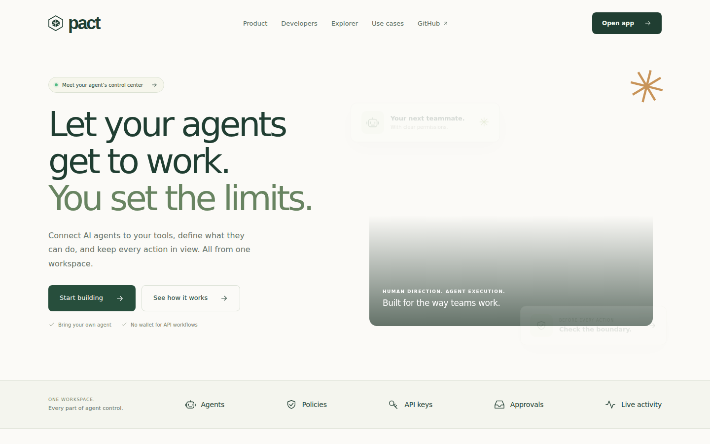
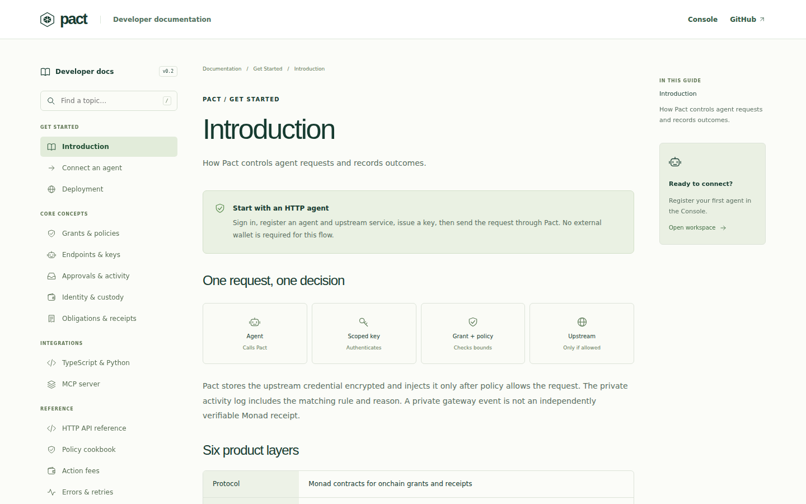
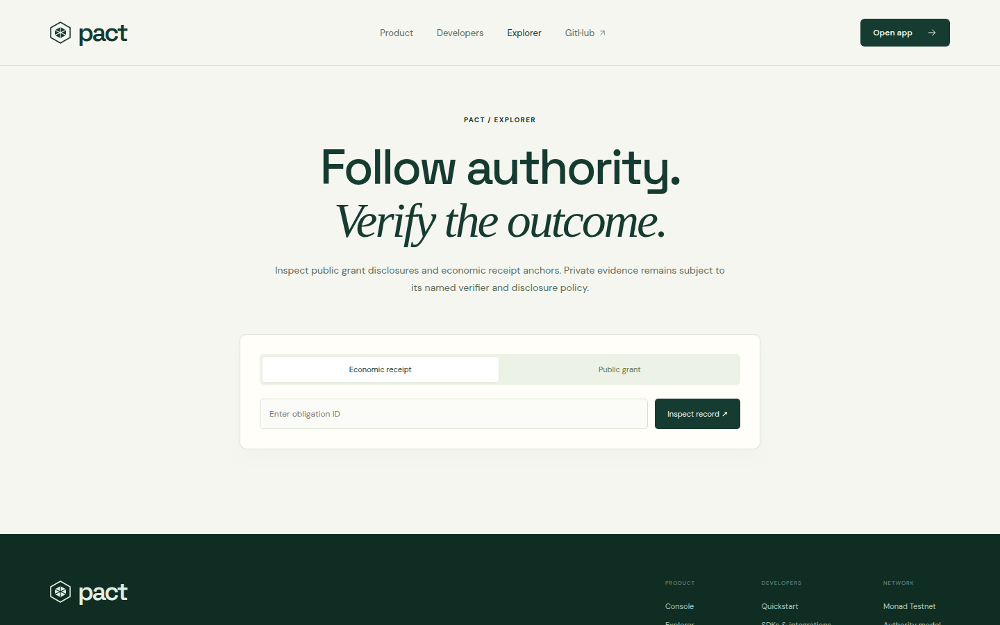
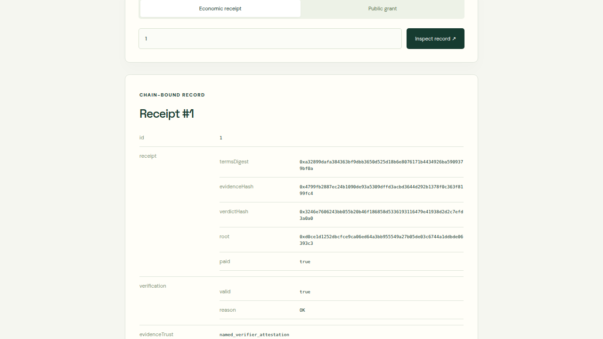

Connect an agent. Set its boundaries. See every decision. Verify an economic receipt on Monad when the action settles.

A wallet or provider key grants broad power. A prompt does not establish who authorized an action, what liability it creates, or why a service accepted it.
An owner grant defines authority. Ordered policies check each proposed action. A scoped Pact key authenticates the integration. The gateway forwards only allowed calls and records the decision.
Register operations manually or import OpenAPI. Protect upstream credentials in the vault. Give the agent a scoped Pact key, never the upstream secret. TypeScript, Python, curl and MCP clients use the same API.

The gateway authenticates the key, checks agent and endpoint state, evaluates ordered rules and grant limits, then injects the protected credential only for an allowed upstream call. Denials do not reach the upstream.
Live Activity shows allowed, denied and pending decisions with upstream status and latency. HTTP activity is a private operator record, retained under product policy; it is not itself an onchain receipt.
Monad testnet grants constrain agent, token, recipient, per-action amount and aggregate capacity. Contracts reserve exact action capacity, prevent replay and require owner approval above threshold. Recurring liability valuation remains future work.
The shipped path supports one funded milestone. Pact links signed terms, evidence, a named verifier verdict, settlement and a receipt root that can be checked against Monad testnet.

A separately deployed Railway agent used a real model through Pact, made allowed and denied gateway calls, executed approved test-token transfers and settled a funded obligation. The test actor later expired and its grants were revoked.
The public API reports verification.valid = true. The receipt root matches the recorded chain state. This does not prove real-world delivery or independent assessment.

First users: teams protecting third-party API calls and Monad-based service or treasury agents. Open-source docs, SDKs, MCP tools and a local demo upstream make the integration reproducible. No customer or revenue claim is made.
https://pact-protocol-monad.alemzdelight.workers.dev/ https://github.com/linoxbt/Pact https://pact-api-production-2ab9.up.railway.app/v1/receipts/1